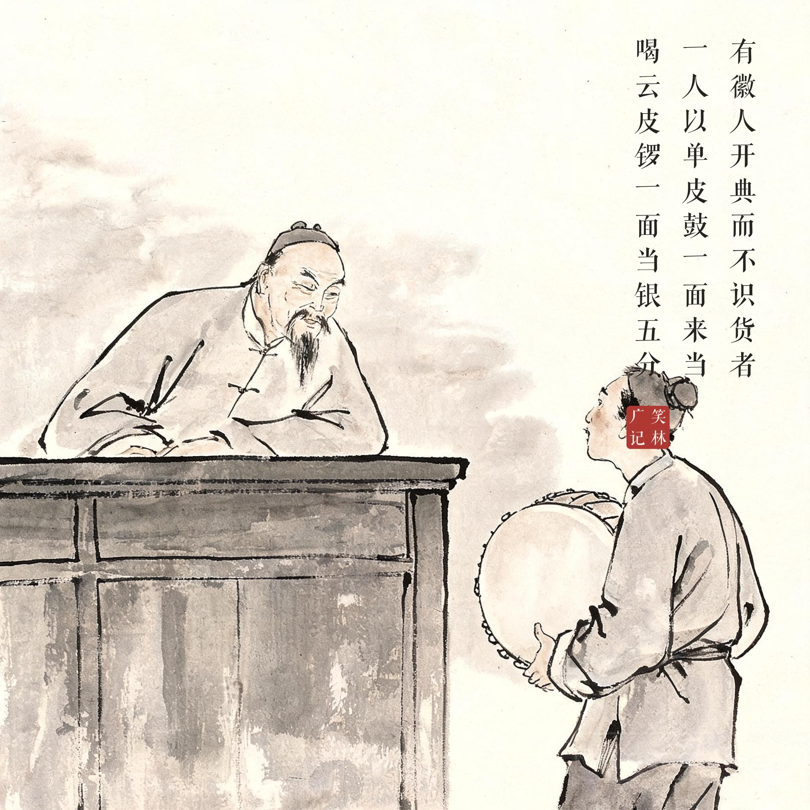
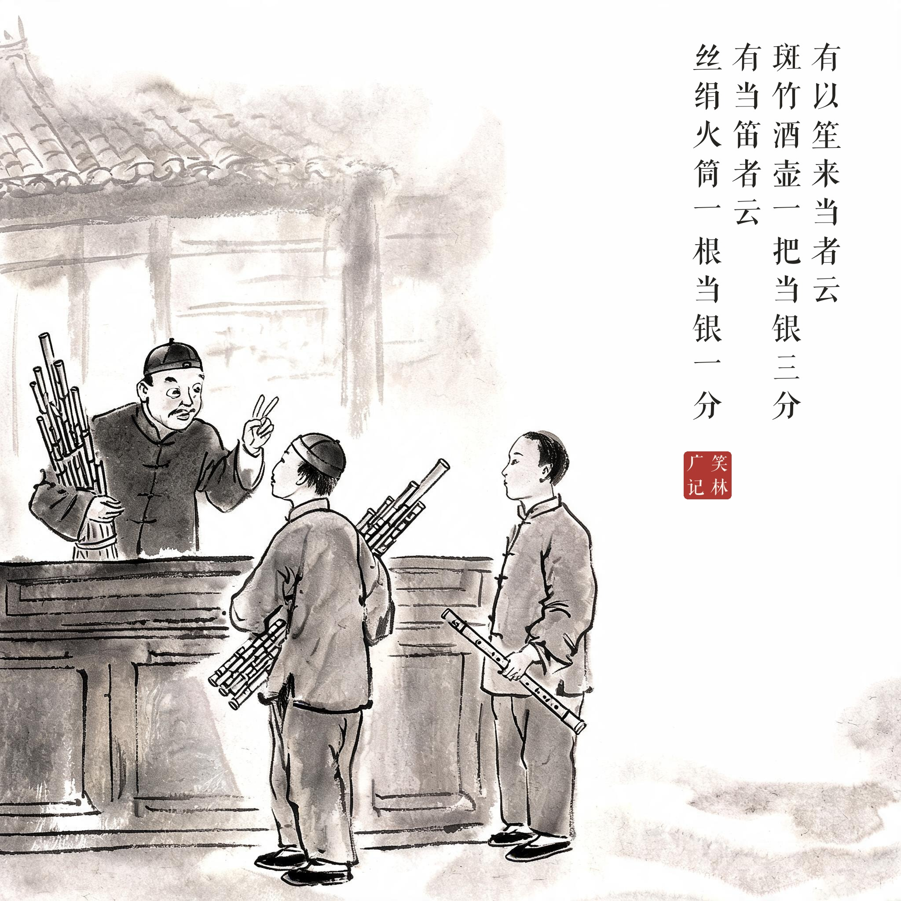
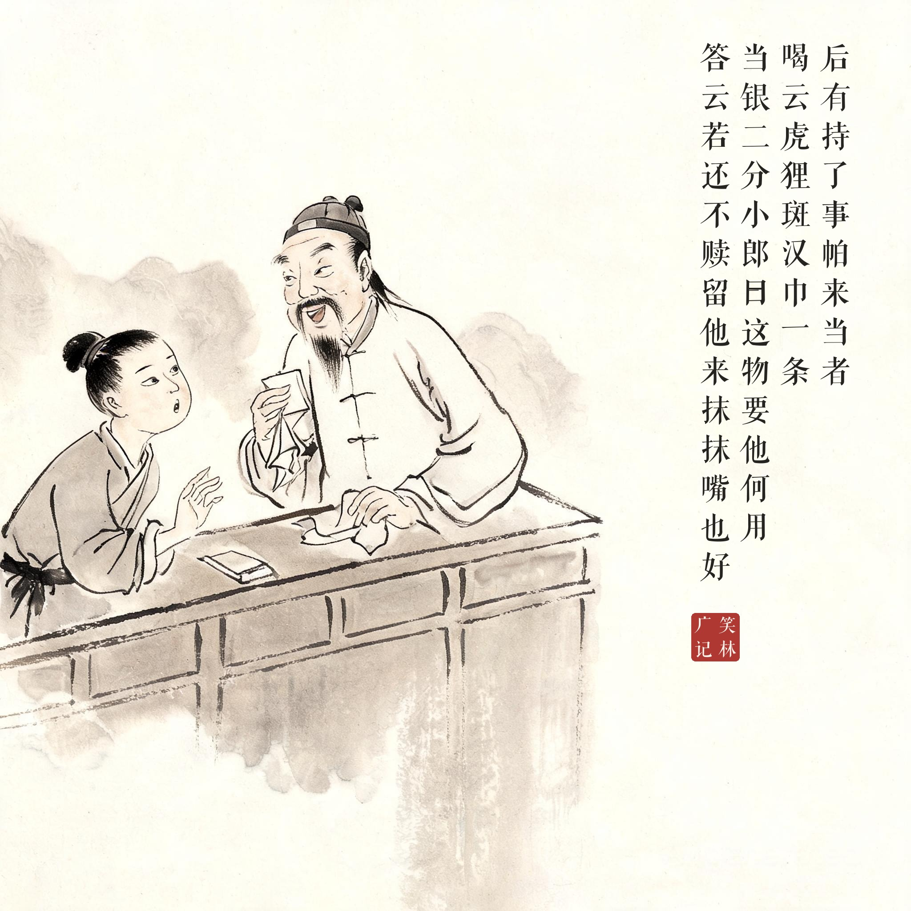

《笑林广记 · 谬误部》（[清]游戏主人纂集）
有徽人开典而不识货者，一人以单皮鼓一面来当，喝云："皮锣一面，当银五分。"有以笙来当者，云："斑竹酒壶一把，当银三分。"有当笛者，云："丝绢火筒一根，当银一分。"后有持了事帕来当者，喝云："虎狸斑汉巾一条，当银二分。"小郎曰："这物要他何用？"答云："若还不赎，留他来抹抹嘴也好。"
有个徽州人开当铺，不识货。有人拿单皮鼓来当，他喊："皮锣一面，当银五分！"有人拿笙来当："斑竹酒壶一把，当银三分。"有人拿笛子来当："丝绢火筒一根，当银一分。"后来有人拿块抹布手帕来当，他喊："虎狸斑汉巾一条，当银二分。"小伙计问："这东西要它干嘛？"答："反正没人赎——留着擦擦嘴也好。"
他不是不识货，是给每件货都发明了新名目——鉴定的最高境界是万物皆可当。